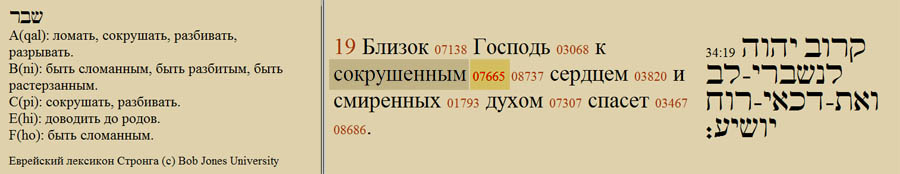

Sounds of the Shofar. Shevarim. Yom Kippur
Let us look in Scripture for the meaning of the shofar blast SHEVARIM.
We continue our conversation about the symbolism, the significance and the meaning of blowing the shofar. As is well known, this tradition distinguishes three kinds of blast. Let us look in Scripture for the meaning of the SHEVARIM blast. To begin with, I want to search the concordance for the phrase "broken heart". Why this phrase in particular? Because it reflects the essence of one of the blasts we are now talking about, the essence of SHEVARIM. We find several places where exactly this phrase, "of a broken heart", occurs. I want to look at Psalm 34:18:
"The LORD is nigh unto them that are of a broken heart; and saveth such as be of a contrite spirit."
קָרוֹב יְהוָה לְנִשְׁבְּרֵי־לֵב וְאֶת־דַּכְּאֵי־רוּחַ יוֹשִׁיעַ׃
Ps. 34:18 KAROV ADONAI LE-NISHBEREI-LEV VE-ET-DAKE'EI-RUACH YOSHIA
I want to look at the Hebrew: "Karov Adonai le-nishberei lev…" (broken is SHAVAR in Hebrew). The blast we are looking at today is called SHEVARIM in Hebrew. SHAVIR is the singular, SHEVARIM the plural. The meaning of this root is to break, to shatter, to smash, to tear (according to Strong's numbers).

Here I must point out that in Scripture we shall not find a set phrase linking the verb, or this state of brokenness, with the shofar. TERUAH, the shout of joy, is a blast we find many times in Scripture. We also find many times another blast that we shall still speak about, TEKIAH. But the word SHEVARIM together with the shofar does not occur in Scripture. Nevertheless, our sages decided that this phrase, "of a broken heart", helped them make their choice. They took the name SHEVARIM as the most fitting to express the essence of what the shofar does in the days before the Day of Judgement (Yom Kippur), the day of awe: the essence of what the shofar does to the heart of every person who seeks the Creator.
Let us look at one more place:
"He healeth the broken in heart, and bindeth up their wounds."
הָרֹפֵא לִשְׁבוּרֵי לֵב וּמְחַבֵּשׁ לְעַצְּבוֹתָם׃
Ps. 147:3 HA-ROFE LI-SHVUREI LEV
In Hebrew, "ha-rofe li-shvurei lev"; notice that it is the same root, SHAVUR. "He healeth the broken in heart": this is an important action, prepared by the breaking of a person's heart. God promises healing to such a person.
One more place I would like to look at is very well known, from the prophet Isaiah, chapter 61:
"1 The Spirit of the Lord GOD is upon me; because the LORD hath anointed me to preach good tidings unto the meek; he hath sent me to bind up the brokenhearted, to proclaim liberty to the captives, and the opening of the prison to them that are bound; 2 To proclaim the acceptable year of the LORD…"
In Hebrew: "2 LIKRO SHENAT-RATSON LA-ADONAI…", which English Bibles give as "the acceptable year of the LORD". In modern words: "the year of the LORD's favour", in other words the JUBILEE, the fiftieth year, a new beginning, when slaves are set free, when each returns to his inheritance and the land and all rights are given back to the one who lost them.
Our phrase in these verses is "to bind up the brokenhearted". Here again is the very important action we have already spoken of: the healing of everyone who is broken in heart. The shofar calls to brokenness; it helps to break the heart of the person who seeks the face of the Most High.
So the SHEVARIM blast that we are examining is a very powerful action that the shofar performs for those who seek the face of God. This action brings healing, restoration and freedom after it. The Strong's number of the word "broken" is H7665; there are quite a lot of places in Scripture with this root, and they are worth studying.
Author: Ephraim Kalish
 Purim 2017. All Articles
Purim 2017. All Articles The Jewish Attitude to the Feasts of the LORD
The Jewish Attitude to the Feasts of the LORD The Ten Commandments (Anochi). Prayerful Chant
The Ten Commandments (Anochi). Prayerful Chant